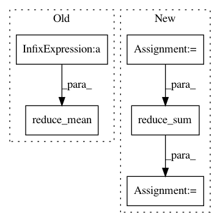

7d9d506e77585e5600b45dc41da1a731a4b30722,nn/loss.py,,sensitivity_specificity_loss,#Any#Any#Any#,83
Before Change
one_hot = tf.SparseTensor(indices=ids,
values=[1.0] * n_voxels,
dense_shape=[n_voxels, n_classes])
one_hotB = 1 - tf.sparse_tensor_to_dense(one_hot)
SensSpec = tf.reduce_mean(
tf.add(tf.multiply(r, tf.reduce_sum(tf.multiply(tf.square(-1 * tf.sparse_add(-1 * pred, one_hot)) \
, tf.sparse_tensor_to_dense(one_hot)),
0) / tf.sparse_reduce_sum(one_hot, 0)), \
tf.multiply((1 - r), tf.reduce_sum(tf.multiply(tf.square(-1 * tf.sparse_add(-1 * pred, one_hot)), \
one_hotB), 0) / tf.reduce_sum(one_hotB, 0))))
return SensSpec
def l2_reg_loss(scope):
After Change
// value of unity everywhere except for the previous "hot" locations
one_cold = 1 - one_hot
squared_error = tf.square(one_hot - pred)
specificity_part = tf.reduce_sum(squared_error * one_hot, 0) / tf.reduce_sum(one_hot, 0)
sensitivity_part = tf.reduce_sum(tf.multiply(squared_error, one_cold), 0) / tf.reduce_sum(one_cold, 0)
return tf.reduce_sum(r * specificity_part + (1 - r) * sensitivity_part)
In pattern: SUPERPATTERN
Frequency: 3
Non-data size: 5
Instances
Project Name: NifTK/NiftyNet
Commit Name: 7d9d506e77585e5600b45dc41da1a731a4b30722
Time: 2017-04-27
Author: z.eaton-rosen@ucl.ac.uk
File Name: nn/loss.py
Class Name:
Method Name: sensitivity_specificity_loss
Project Name: rail-berkeley/softlearning
Commit Name: ca454c063d53d12ca94c9ed68ee16db79fbbd4a8
Time: 2018-05-22
Author: kristian.hartikainen@gmail.com
File Name: sac/algos/sac.py
Class Name: SAC
Method Name: _init_actor_update
Project Name: jakeret/tf_unet
Commit Name: 12f172aa94a790250c9e2073c35fb67810334399
Time: 2017-03-07
Author: joe.akeret@gmail.com
File Name: tf_unet/unet.py
Class Name: Unet
Method Name: _get_cost